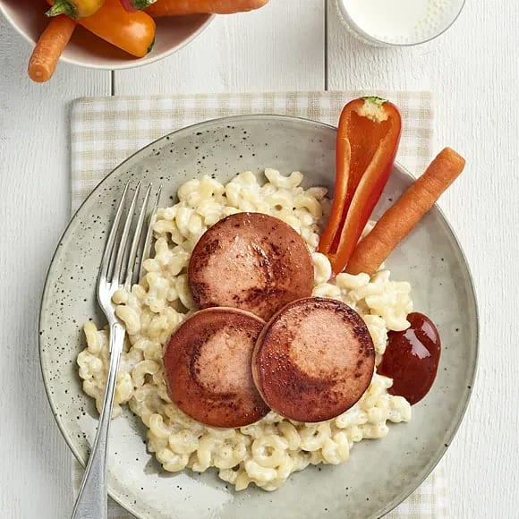

Falu Sausage with Stewed Macaroni

Image by ICA
Recipe for Falu Sausage with Stewed Macaroni
Sausy and sauce-y dish, very delish.
Ingredients
falu sausage
macaroni
stewy stuff
Steps
do the thing
add the thing
stir the thing
pour the thing
eat the thing